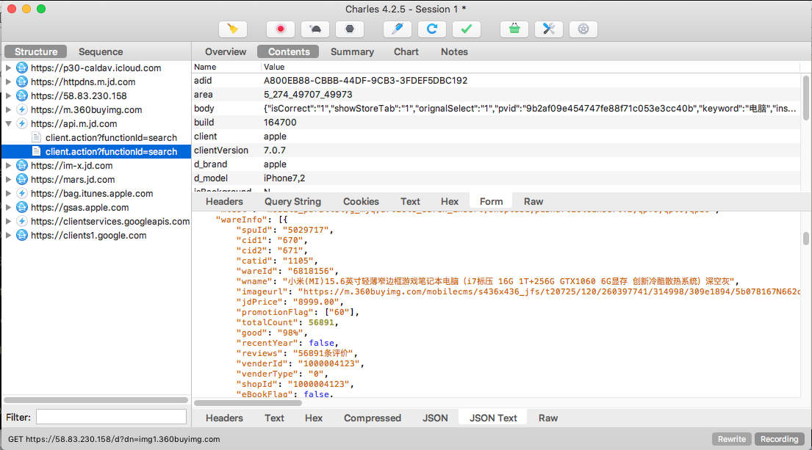
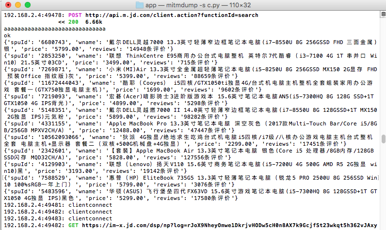

20. App信息抓取实战
① 抓取目标：
- 我们的抓取目标是京东商城的App电子商品信息，并将信息保存到MongoDB数据库中。
我们将商品信息的id号、标题、单价、评价条数等信息
② 准备工作和抓取分析
准备工作：
- 安装app抓包工具Charles、mitmproxy。
- 配置网络，确认手机和PC处于同一局域网下，并配置好代理服务
- 安装证书，确保可以抓取HTTPS的请求信息。
- 安装并开启MongoDB数据库。
抓取分析：
- 打开iCharles抓包工具，让后使用手机打开京东App应用程序，让后搜索
电脑商品信息。 - 在抓包工具中获取url地址：
http://api.m.jd.com/client.action?functionId=search 抓取信息格式为json格式。具体如下图所示

- 打开iCharles抓包工具，让后使用手机打开京东App应用程序，让后搜索
③ 代码编写：
import json
#import pymongo
from mitmproxy import ctx
#连接MongoDB数据库jddb，选择集合shop
#client = pymongo.MongoClient('localhost')
#db = client['jddb']
#collection = db['shop']
def response(flow):
#global collection
url = 'http://api.m.jd.com/client.action?functionId=search'
if flow.request.url.startswith(url):
text = flow.response.text
data = json.loads(text)
shops = data.get('wareInfo')
for shop in shops:
item = {
'spuId': shop.get('spuId'),
'wname': shop.get('wname'),
'price': shop.get('jdPrice'),
'reviews': shop.get('reviews')
}
ctx.log.info(str(item))
#写入MongoDB数据库
#collection.insert(data)
- 测试运行：
mitmdump -s script.py
